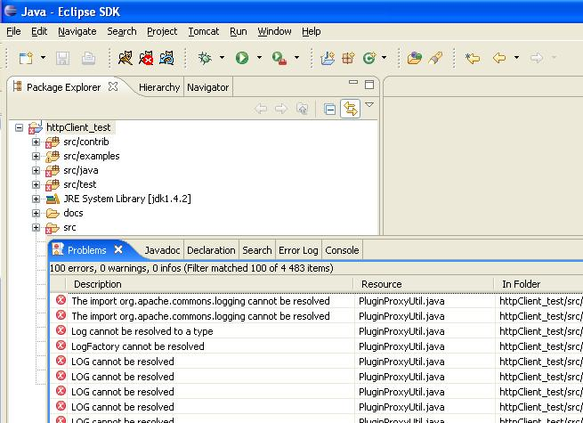
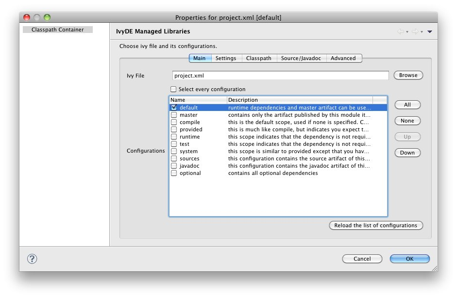
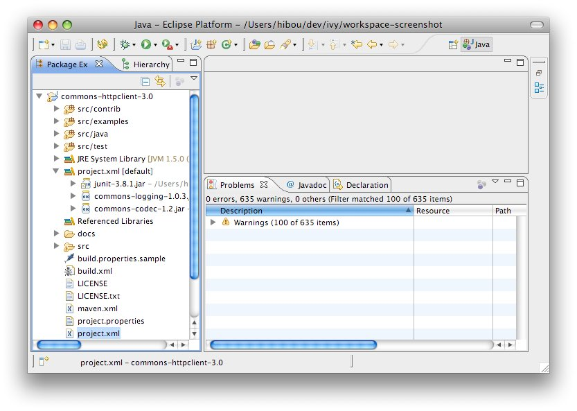

<h1>General</h1> <p>If you want to use a maven pom.xml instead of ivy.xml file, you just have to select a pom file in the configuration form of IvyDE class path.<br/>When a maven pom is selected, the configurations list is updated with all maven scopes.</p> <p>Both examples below are a good illustration of maven pom use simplicity :</p> <ul> <li><a href="#one">Maven1 sample</a></li> <li><a href="#two">Maven2 sample</a></li> </ul> <h1><a name="one"></a>Maven1 Sample</h1> <p>This sample presents a simple use case of maven pom for IvyDE class path container. We are going to create an eclipse project on commons-httpclient sources.</p> <p><b> - Download the <a href="http://archive.apache.org/dist/httpcomponents/commons-httpclient/3.0/source/commons-httpclient-3.0-src.zip">commons httpclient sources</a></b></p> <p><b> - Unzip this file (c:/tmp/commons-httpclient/)</b></p> <p><b> - Create a new Eclipse java project based on the unzipped sources (c:/tmp/commons-httpclient/)</b><br /> <center><br/><br /> <u><b>Notes:</b></u> your project do not compile: some imports cannot be resolved.<br /> </center><br /> <b> - Add a new class path container based on the "project.xml" pom and select "default" configuration (maven scope)</b><br /> <center><br /> <br /> </center><br /> <b> - That's all : your project compiles !</b><br /> <center><br /> <br /> </center></p> <h1><a name="two"></a>Maven2 Sample</h1> <p>This sample shows that IvyDE Class path container on a Maven2 pom can handle transitive dependancies.</p> <p><b> - Create a new empty java project in eclipse.</b></p> <p><b> - In your Ivy project configuration, set the ivy settings file below (Project/Properties/Ivy):</b></p> <code><ivysettings> <conf defaultResolver="ibiblio"/> <resolvers> <ibiblio name="ibiblio" /> </resolvers> </ivysettings> </code> <p>Using the m2compatible attribute, you can benefit from Maven2 repository compatibility.<br/><br /> <b> - Add the pom below in your project and select it for an IvyDE class path container choosing "compile" and "runtime" configurations.</b><br/></p> <code> <project> <modelVersion>4.0.0</modelVersion> <groupId>com.mycompany</groupId> <artifactId>myproject</artifactId> <version>1.0-SNAPSHOT</version> <dependencies> <dependency> <groupId>commons-httpclient</groupId> <artifactId>commons-httpclient</artifactId> <version>3.0</version> </dependency> </dependencies> </project> </code> <p><b> - That's all ! Your IvyDE class path container gets all dependencies even those that were transitive to the commons-httpclient module !</b><br /> <br/><br /> <img src="images/maven2classpath.jpg"/></p>